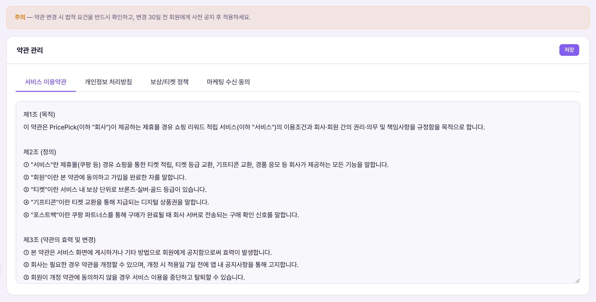
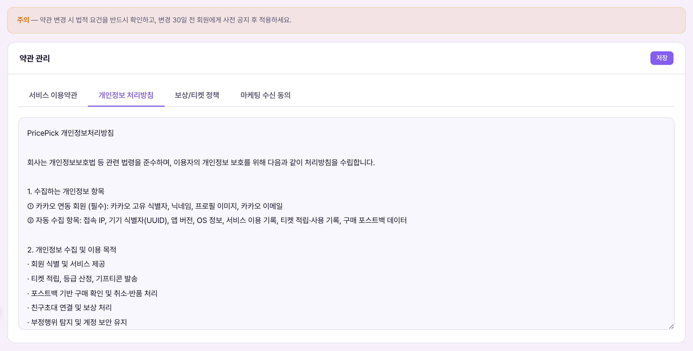

약관 관리는 회원에게 노출되는 법적 문서 4종의 전문(全文)을 직접 편집·저장하는 화면입니다. 운영 정책(숫자·규칙 요약)과 달리, 여기는 실제 법적 효력이 있는 텍스트 원문을 다룹니다. 서비스 이용약관·개인정보 처리방침·보상/티켓 정책·마케팅 수신 동의 4개 탭이 있고, 각 탭은 하나의 큰 텍스트 박스(textarea)로 돼 있어 운영자가 직접 문구를 고칠 수 있습니다.Quản lý điều khoản là màn trực tiếp sửa·lưu toàn văn 4 loại văn bản pháp lý hiển thị cho hội viên. Khác với Chính sách vận hành (tóm tắt số liệu·quy tắc), đây là nơi xử lý văn bản gốc có hiệu lực pháp lý thật. Có 4 tab: điều khoản dịch vụ·chính sách bảo mật·chính sách thưởng/vé·đồng ý nhận marketing, mỗi tab là một ô văn bản lớn (textarea) để vận hành viên tự sửa câu chữ.


| 탭Tab | 내용Nội dung | 회원에게 보이는 위치Vị trí hiển thị cho hội viên |
|---|---|---|
| 서비스 이용약관Điều khoản dịch vụ | 목적·정의·회원가입·금지행위·티켓 및 보상·서비스 중단·회원 탈퇴 등 제1~8조Điều 1~8: mục đích·định nghĩa·đăng ký thành viên·hành vi cấm·vé và thưởng·ngừng dịch vụ·rút tư cách thành viên | 회원가입 동의 화면, 마이 > 약관 메뉴Màn đồng ý khi đăng ký, menu Của tôi > Điều khoản |
| 개인정보 처리방침Chính sách bảo mật | 수집 항목·이용 목적·보유기간·제3자 제공·정보주체 권리Mục thu thập·mục đích sử dụng·thời gian lưu·cung cấp bên thứ ba·quyền chủ thể thông tin | 회원가입 동의 화면, 마이 > 약관 메뉴Màn đồng ý khi đăng ký, menu Của tôi > Điều khoản |
| 보상/티켓 정책Chính sách thưởng/vé | 티켓 적립·적립 시점 및 취소반품·기프티콘 교환·경품 응모 안내문Tích lũy vé·thời điểm tích lũy và hủy trả hàng·đổi Gifticon·hướng dẫn tham dự giải thưởng | 마이 > 약관 메뉴 내 별도 문서Văn bản riêng trong menu Của tôi > Điều khoản |
| 마케팅 수신 동의Đồng ý nhận marketing | 선택 동의 항목·발송 내용·수신 거부 방법 안내문Mục đồng ý tùy chọn·nội dung gửi·hướng dẫn cách từ chối nhận | 회원가입 시 선택 동의 화면, 마이 > 알림 설정Màn đồng ý tùy chọn khi đăng ký, Của tôi > Cài đặt thông báo |
가장 중요한 특징입니다(확인됨: termsSubmit 함수). "저장" 버튼은 지금 보이는 탭 하나만 저장하는 게 아니라, 4개 탭의 textarea 내용을 전부 모아서 한 번의 배치(batch)로 동시에 저장합니다. 즉 서비스 이용약관만 고치고 저장을 눌러도, 나머지 3개 탭(개인정보·보상정책·마케팅동의)의 현재 내용까지 함께 다시 쓰여집니다(내용이 그대로면 실질적 변화는 없지만, updated_at 시각은 4개 문서 모두 갱신됨).Đặc điểm quan trọng nhất (đã xác nhận: hàm termsSubmit). Nút "Lưu" không chỉ lưu tab đang xem mà gom nội dung textarea của cả 4 tab rồi lưu cùng lúc trong 1 batch. Tức chỉ sửa Điều khoản dịch vụ rồi bấm Lưu thì 3 tab còn lại (bảo mật·chính sách thưởng·đồng ý marketing) cũng được ghi lại (nội dung không đổi thì không có thay đổi thực chất, nhưng thời gian updated_at của cả 4 document đều cập nhật).
| 상황Tình huống | 운영자가 하는 일Việc vận hành viên làm | 주의Lưu ý |
|---|---|---|
| 법령 개정으로 개인정보처리방침 수정Sửa chính sách bảo mật do luật thay đổi | "개인정보 처리방침" 탭 선택 → 해당 조항 텍스트 직접 수정 → 저장Chọn tab "Chính sách bảo mật" → sửa trực tiếp văn bản điều khoản → Lưu | 화면 상단 경고대로 변경 30일 전 회원 사전 공지 필요(공지사항 관리에서 별도 게시)Theo cảnh báo trên đầu màn hình cần thông báo trước cho hội viên 30 ngày (đăng riêng ở Quản lý thông báo) |
| 오탈자만 급하게 고치기Sửa gấp lỗi chính tả | 해당 탭에서 한 글자만 고치고 저장Sửa đúng chỗ sai ở tab đó rồi Lưu | 버튼 하나로 4탭이 다 저장되므로, 다른 탭에 임시로 입력해둔 내용이 있다면 함께 저장돼버릴 수 있음 — 저장 전 4탭 모두 확인 권장Vì 1 nút lưu cả 4 tab, nếu tab khác đang có nội dung nháp thì cũng bị lưu theo — nên kiểm tra cả 4 tab trước khi bấm Lưu |
| 전문 정합 여부 확인Kiểm tra tính nhất quán toàn văn | 마스터 정책서(policyspec.html)의 확정 전문과 이 화면 textarea 내용을 대조Đối chiếu toàn văn đã chốt trong Tài liệu chính sách gốc (policyspec.html) với nội dung textarea ở màn này | 회사명·조항 번호·날짜 같은 세부 표기가 정책서와 다르면 즉시 정정 필요Nếu tên công ty·số điều·ngày tháng khác với tài liệu chính sách thì cần sửa ngay |